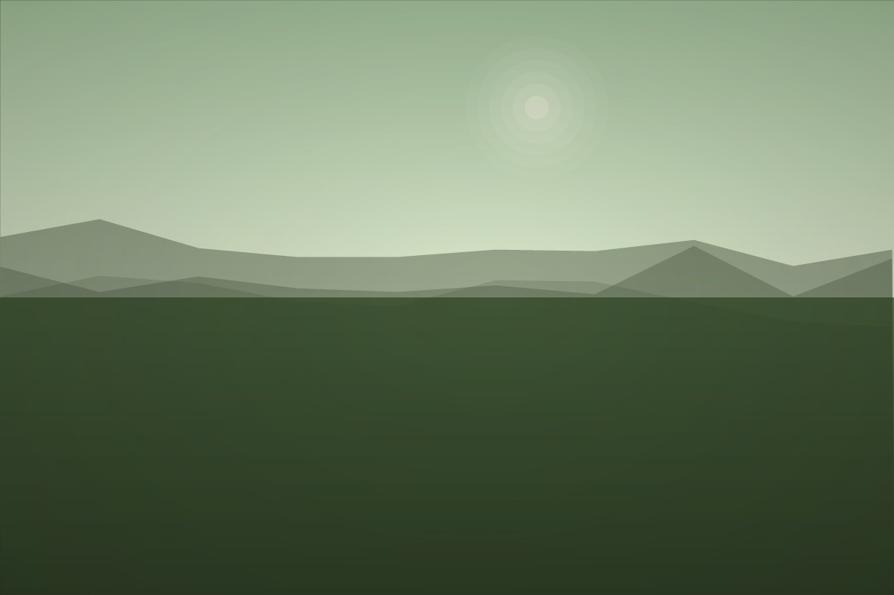

Project name
One or two sentences on what it does and who it’s for.
Every block used on the site, next to the exact markup. To add content, copy a block, paste it into index.html, and overwrite the words. Nothing here needs new CSS.
Icons come from the sprite at the top of index.html’s <body>. Colours and spacing come from the tokens in style.css.
Section shell
The wrapper every section uses. The .node span draws the diamond and the routing line into the title — it’s decorative, so it carries aria-hidden. Give the section an id and add a matching nav link; the scroll-spy picks it up automatically.
<!-- ═══ SECTION NAME ═══ --> <section class="section fade-in" id="slug"> <div class="wrap"> <span class="node" aria-hidden="true"></span> <h2>Section name <span class="aside">— optional</span></h2> <!-- content --> </div> </section>
Project
An <article>, not a link — it holds several links and anchors can’t nest.
The title link stretches over the whole row, so the row still acts as one big click target
while the icons stay separately clickable.
data-preview is the image shown on hover (desktop pointers only; touch is
unaffected). Point the title at the project’s own page under /projects/.
Drop .tag--win when there’s no award, and drop either icon when there’s no
repo or no live site.
One or two sentences on what it does and who it’s for.
<article class="project" data-preview="img/previews/slug.jpg"> <div> <h3> <a class="project-title" href="projects/slug/">Project name</a> </h3> <p>One or two sentences.</p> <div class="tags"> <span class="tag tag--win">2nd place</span> <span class="tag">Next.js</span> </div> </div> <div class="project-links"> <a class="project-icon" href="REPO" target="_blank" rel="noopener" aria-label="Name repository on GitHub"> <svg class="icon icon--solid"> <use href="#i-github"></use> </svg> </a> <a class="project-icon" href="LIVE_URL" target="_blank" rel="noopener" aria-label="Name live site"> <svg class="icon"> <use href="#i-arrow"></use> </svg> </a> </div> </article>
Project page
Each project has its own page at projects/<slug>/index.html. To add one, copy an
existing folder, rename it, and change the words — then add a matching row above and a
<url> entry in sitemap.xml. The page links back with
../../#work and pulls CSS from ../../style.css.
2026 · 36 hours
Turning intimidating government notices into plain language.
2nd place — STEMINATE Hacks 2026
projects/ waive/index.html subly/index.html alarm-clock/index.html snaptex/index.html <!-- inside each page --> <article class="case"> <a class="case-back" href="../../#work">…</a> <h1>Waive</h1> <p class="case-tagline">…</p> <figure class="case-shot">…</figure> <div class="case-grid"> <div class="case-body">…</div> <aside class="case-meta">…</aside> </div> </article>
Row
Used by Experience, Education and Awards. The left column takes a date range, a year, or a word like “Certification”.
One sentence on what you did and what changed because of it.
<div class="row"> <div class="row-when">2025 — now</div> <div class="row-what"> <h3>Role <span class="org">· Org</span></h3> <p>What you did.</p> </div> </div>
Skill group
Columns wrap automatically — add as many groups as you like without touching the CSS.
<div class="skill-group"> <h3>Languages</h3> <ul> <li>TypeScript</li> <li>Python</li> </ul> </div>
Photo
Swap the file in /img and keep the same filename — nothing else changes. Keep width/height matching the real file so the page doesn’t jump while images load, and leave alt empty for purely decorative shots.

<figure> <img src="img/travel-01.jpg" alt="" width="1200" height="800" loading="lazy"> <figcaption>Moab, UT</figcaption> </figure>
Stat
The hero rail. Four reads best; five starts to wrap awkwardly on a laptop.
<div class="stat"> <b>4.0</b> <span>GPA</span> </div>
Buttons
Marker swipes, not boxes. The stroke is a background image on the element, so a button is one tag — no wrapper spans. Hovering lays down a second, shorter pass. Use --primary once per section at most.
Highlight
The same marker, used inline. One per paragraph at most — it stops meaning anything if everything is highlighted.
I build things that sit between software and hardware.
<span class="mark">software and hardware</span>
Tags
.tag--win picks up the accent — use it for awards and placings only.
<div class="tags"> <span class="tag tag--win">2nd place</span> <span class="tag">TypeScript</span> </div>
Icons
All five live in the sprite at the top of index.html. Add one by pasting a <symbol id="i-name"> beside them. Use .icon--solid for filled logo marks like GitHub.
<svg class="icon"><use href="#i-mail"></use></svg> <!-- filled logo marks --> <svg class="icon icon--solid"> <use href="#i-github"></use> </svg>
Tokens
Change these in style.css and the whole site follows. If you restyle, re-check text contrast — the current values are all AA or better on the paper ground.
--paper--ink--ink-2--ink-3--trace--wash--rule--grid/* style.css */ --paper: #FBFBF9; /* page ground */ --ink: #14161A; /* body text */ --trace: #0E7490; /* accent */ --wash: #DDF2B2; /* marker */ /* type + space scales live here too */ --t-base: 1rem; --s-5: 24px; --gutter: 76px; /* trace rail */